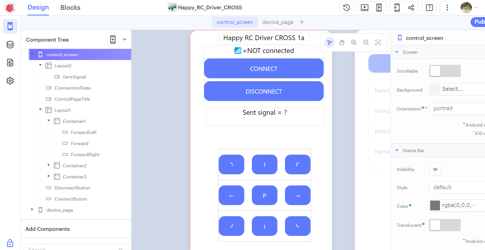
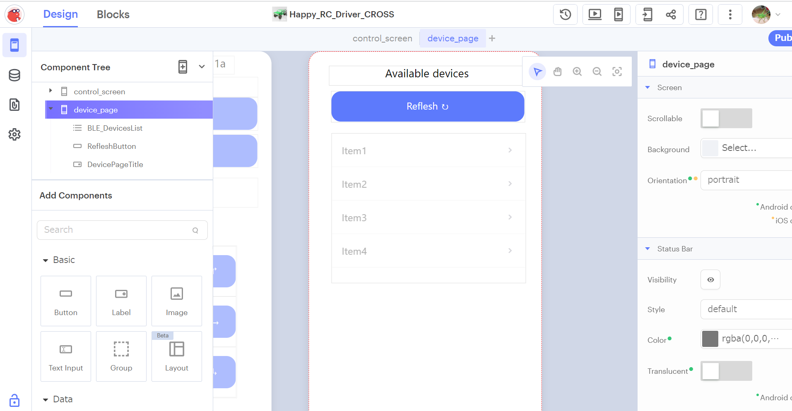
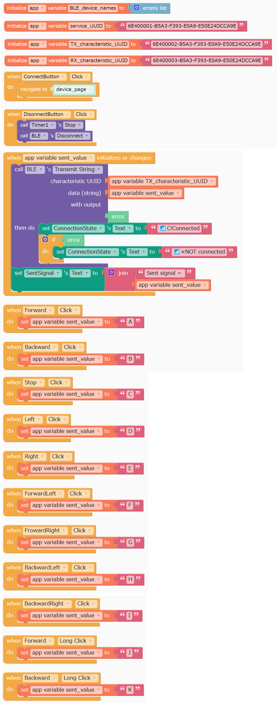
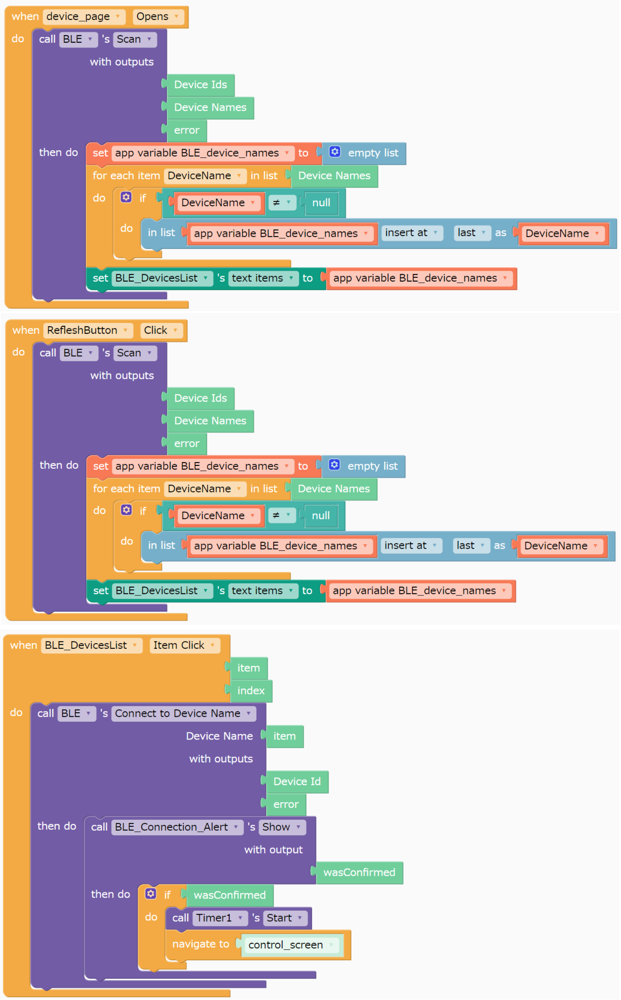

～ 目次 ～
- 1. Happy RC Driver ー 遂に Android＆IOS 両対応化？
- 2. 開発環境
- 3. 作ったスマホアプリ
- 4. ESP32側のソースコード
- 5. まとめ
- 6. サンプルファイル
- 7. 参考資料
1. Happy RC Driver ー 遂に Android＆IOS 両対応化？
1年半ほど前から、自作のラジコン操縦アプリ「Happy RC Driver」の開発を行っていましたが、Android版 のみの対応でした。
2ヵ月ほどの試行錯誤の末、やっとAndroid＆IOS両対応の操縦アプリができました！ 現状では動作テストをAndroidのみでしか行っていないので、今度はIOS端末でもテストしようと考えています。
AndroidとIOS両対応のクロスプラットフォームアプリということで、アプリ名を「Happy RC Driver CROSS」にしました！
下の画像は新アプリのアイコンです～☟
2. 開発環境
2.1. 色々な開発環境を試す…
AndroidとIOSの両対応アプリを開発する方法は、React Native、Flutter、Xamarin など色々あることが調べてみて分かりました。友人が Flutter をやっていたので、まずは Android Studio に「Flutter」の開発環境を整えて色々やってみました。
今の私には、プロジェクトの構成（たくさんあるファイルの名前や保存先）や使用するウィジェット（画面のデザイン）を理解するので精一杯で、結局諦めてしまいました。もう少し簡単な方法で「Flutter Flow」というノーコードツール（テキストベースのプログラムを書かなくてよい）がありました。
このBluetoothのチュートリアル1を試したのですが、Custom Actionのコードがかなり長いのと、エラーの修正に苦戦してこちらも諦めてしまいました。あと、完成したアプリをダウンロードするにはお金がかかるみたいです。私のような初心者には厳しい部分が多かったですが、このチュートリアルは説明がとても分かりやすかったです (;‘∀’)ｲｲﾈ!
最終的には「Thunkable」というWeb上で使えるアプリ開発環境を使って、今回のアプリを開発しました！
2.2. Thunkableについて
「Thunkable」（サンカブル？）は、プログラミング言語を使わずにドラッグ＆ドロップでアプリ開発ができます。PC上に開発環境を用意する必要もなく、ログインすればブラウザ上でアプリの開発やテストができるので手軽です。
使った感じは「MIT App Inventor」にとても似ていますが、こちらはIOS対応なのが嬉しい点です。Thunkableの無料版は、プロジェクト数が10個に制限されている、作ったアプリは公開になる、アプリダウンロードは月2回 などの欠点がありますが、ガツガツ使わないので大丈夫そうです。（ガツガツやるときはMIT App Inventor使います）
3. 作ったスマホアプリ
timwooさんの記事を参考2にして、スマホアプリとマイコン（ESP32）側のプログラム開発を行いました（ありがとうございます）。下の画像（4枚）が試作したアプリの外観と中身になります。このアプリは、2つの画面で構成されています。
-
control_screen：ラジコンを操縦するためのメイン画面。
-
device_page：接続可能なBluetoothデバイスの一覧を表示する画面。
 ☝ アプリ外観（control_screen, デザイン編集タブ） ☝ アプリ外観（device_page, デザイン編集タブ） ☝ アプリの中身（control_screen, ブロック編集タブ） ☝ アプリの中身（device_page, ブロック編集タブ）
4. ESP32側のソースコード
Arduino IDEを使って、ESP32にこのプログラム書き込みます。
このプログラムでは、スマホから受信した信号に応じて、ラジコンのESCとサーボモータ制御します。Happy RC Driver 5aと、6bをベースに作成しました。
スマホ・マイコン間のデータのやりとりは Bluetooth Low Energy（BLE） で行います。Bluetoothの専門用語を使うと、スマホ側はセントラル、マイコン側はペリフェラルと呼ばれます。
さらに細かい話をすると、ServiceとCharacteristicというデータ構造にUUID(Universally Unique Identifier)というIDで名前付けして、セントラル・ペリフェラル間でデータをやり取りします。Bluetoothの専門用語や動作原理は、色々な方が分かりやすく説明してくれている3,4ので、説明はそちらを参考にされると良いと思います。
プログラムの詳細な説明は、コメント文に書いたのでご覧ください。
このプログラムで使用されているUUIDは Nordic UART Service (NUS)5 というものみたいで、シリアル通信（厳密にはUART6という方式の）をBluetoothで無線化するときとかに使うみたいです。Nordic社のBLEモジュールに使われるものみたいですが、他社のものでも（例えばmicro:bitとか）にも使われているみたいでした。ESP32になぜ使えるのかは、私の調査した範囲では分かりませんでした。ちなみにこのプログラムでこれ以外のUUIDを使うと上手く通信できませんでした。
/* Happy_RC_Receiver_CROSS(version 1a) *****************************
Get a Transmitter App:https://x.thunkable.com/projectPage/6534812c1faebb9600aa81d3
About this Project:https://github.com/TomokiIkegami/Happy_RC_Driver
◆ 動作
1.スマホアプリ(Happy_RC_Receiver_CROSS)から命令（'A'～'I'）を取得
2.取得した命令に基づいて、RCを前後左右に操作
◆ 機能
・「Happy RC Driver」のAndroid＆IOS両対応版
・アプリを開いていないときは、車体を停止させる安全機能を装備（Dragブレーキ付きESCを使用すること）
・アプリ再起動時には、走行停止ボタン（画面中央のPボタン）を押さないと走行しない（アプリ再起動時に急に走行する危険を防ぐため）
・カクカクではなく滑らかな走行が可能に
・速度の切り替えが可能に（2種類の速度）
◆ 補足
・プログラム中で★マークがついている部分は、自分の装置に合わせて調整
*************************************************************/
/* ServiceとCharacteristicのUUID定義 */
#define SERVICE_UUID "6E400001-B5A3-F393-E0A9-E50E24DCCA9E" // UART service UUID
#define CHARACTERISTIC_UUID_RX "6E400002-B5A3-F393-E0A9-E50E24DCCA9E" // UART characteristic UUID
#define CHARACTERISTIC_UUID_TX "6E400003-B5A3-F393-E0A9-E50E24DCCA9E"
/*ハードウェアの接続ピンの設定*/
#define SERVO_PWM_PIN 4 //サーボモータのPWMピン（信号入力ピン）をESP32の4番ピンに接続 ★回路と対応した番号にする
#define ESC_PWM_PIN 16 //ESCのPWMピン（信号入力ピン）をESP32の16番ピンに接続 ★回路と対応した番号にする
/*ライブラリ*/
#include <ESP32Servo.h> //ESC・サーボモータの制御に使用
#include <BLEDevice.h> //Bluetooth通信用
#include <BLEServer.h> //Bluetooth通信用
#include <BLEUtils.h> //Bluetooth通信用
#include <BLE2902.h> //Bluetooth通信用
BLECharacteristic *pCharacteristic; //Characteristicを定義
bool deviceConnected = false; //接続状態を保存する変数
/*ESC,サーボのオブジェクト作成*/
Servo myservo; // サーボモータを制御するためのServoオブジェクト作成
Servo myesc; // ESCを制御するためのServoオブジェクト作成
int pulsew_min = 500; //minimum pulse width of servo motor（サーボモータの最小パルス幅）
int pulsew_max = 2400; //maximum pulse width of servo motor（サーボモータの最大パルス幅）
/*ステアリングの設定*/
unsigned long mov_speed_ST = 40; //ステア移動速度
int center_pos = 95; //ステア中心位置 [サーボモータの中心位置 (90°)] ★まっすぐ走るように調整。90より大きい値にするとステア（ハンドル）が右寄りに、90より小さい値にするとステア（ハンドル）が左寄りになる
int left_DR = 20; //左の切れ角 ★:好みに合わせて調整。ただし大きくしすぎないように注意。
int right_DR = 25; //右の切れ角 ★:好みに合わせて調整。ただし大きくしすぎないように注意。
int left_max = center_pos - left_DR; //左ステアの最大位置 [中心位置より反時計回りに20°（left_DR）回転した位置] ★逆に動くときはleft_DRの手前の符号をプラス（+）に
int right_max = center_pos + right_DR; //右ステアの最大位置 [中心位置より時計回りに25°（right_DR）回転した位置] ★逆に動くときはright_DRの手前の符号をマイナス（-）に
/*スロットルの設定*/
unsigned long mov_speed_TH = 0; //スロットル移動速度
unsigned long mov_speed_brk = 40; //ブレーキ速度
int neutral_pos = 93; //中立位置 [スロットルの中立位置 (90) ★ESCの設定によってずれがあるので、前後に走行しないよう値を調整する。※ ESC側を90で中立になるよう設定（上級者向け。ESCの説明書通りプロポでニュートラル設定を済ませてから、このプログラムの値を調整するのがオススメ）してもよい。]
int forward_DR = 20; //前進の速さ ★好みの速度に調整
int backward_DR = 20; //バックの速さ ★好みの速度に調整
int forward_max = neutral_pos + forward_DR; //前進の最大位置 ★逆に動くときはforward_DRの手前の符号をマイナス（-）に
int backward_max = neutral_pos - backward_DR; //バックの最大位置 ★逆に動くときはbackward_DRの手前の符号をプラス（+）に
int turbo_speed = 120; //全開走行時の速度（180が最大。速すぎると思ったら170や160など値を小さくしてみる）
/*値設定の注意点*/
//速度(mov_speed_ST,mov_speed_TH)は 0-50 の範囲で与える。（0：最低速度、50:最大速度）
//スロットル、サーボモータの値(pos)の範囲は、 0≦ pos ≦180 で与える。
//myservo.write 関数には回転角を絶対的な位置で与える。例) 90°から 45°反時計回りに動いてほしいときは、-45ではなく、45を関数に入力する。
/*ステアとスロットルの位置を記憶する変数*/
int CH1 = center_pos; //CH1:ステア
int CH2 = neutral_pos; //CH2:スロットル
/*プログラムの流れを制御する変数*/
char input = 'C'; //入力信号
unsigned long curr; /*現在時刻を保存*/
unsigned long prev_ST = 0; /*前時刻を保存*/
unsigned long prev_TH = 0; /*前時刻を保存*/
/*PWM制御でサーボモータの角度を制御する関数*/
/*ステアを操作する関数*/
void change_ST_pos(int goal_pos, unsigned long mov_speed) {
unsigned long delay_time = 50 - mov_speed; //処理を遅くする時間（この値が大きいとゆっくりな操作に）
if ((curr - prev_ST) >= delay_time) {
/*ステアを切る処理*/
//右折
if (goal_pos - CH1 > 0) {
CH1++;
myservo.write(CH1);
//左折
} else if (goal_pos - CH1 < 0) {
CH1--;
myservo.write(CH1);
//その他→ステアはそのまま
} else {
myservo.write(CH1);
}
prev_ST = curr; //前回に処理を実行した時刻を現在時刻に更新
}
}
/*スロットルを操作する関数*/
void change_TH_pos(int goal_pos, unsigned long mov_speed) {
unsigned long delay_time = 50 - mov_speed; //処理を遅くする時間（この値が大きいとゆっくりな操作に）
if ((curr - prev_TH) >= delay_time) {
/*スロットルを操作する処理*/
//前進
if (goal_pos - CH2 > 0) {
CH2++;
myesc.write(CH2);
//後退
} else if (goal_pos - CH2 < 0) {
CH2--;
myesc.write(CH2);
//その他→スロットルはそのまま
} else {
myesc.write(CH2);
}
prev_TH = curr; //前回に処理を実行した時刻を現在時刻に更新
}
}
/*接続状態を更新するクラス*/
class MyServerCallbacks : public BLEServerCallbacks {
void onConnect(BLEServer *pServer) {
deviceConnected = true;
};
void onDisconnect(BLEServer *pServer) {
deviceConnected = false;
}
};
/*スマホから受信した値を取得するクラス*/
class MyCallbacks : public BLECharacteristicCallbacks {
void onWrite(BLECharacteristic *pCharacteristic) {
std::string rxValue = pCharacteristic->getValue();
if (rxValue.length() > 0) {
for (int i = 0; i < rxValue.length(); i++) {
input = rxValue[0];
}
}
}
};
void setup() {
Serial.begin(115200); //シリアルモニタで確認用。伝送速度は115200[bps]に設定。
myservo.attach(SERVO_PWM_PIN, pulsew_min, pulsew_max); //サーボモータのPWM端子とArduinoの4番ピンを接続 ★回路と対応した番号にする
myesc.attach(ESC_PWM_PIN, pulsew_min, pulsew_max); //ESCのPWM端子とArduinoの16番ピンを接続 ★回路と対応した番号にする
// Create the BLE Device（BLEデバイスの作成）
BLEDevice::init("Happy_RC_Receiver_CROSS"); // Give it a name
// Create the BLE Server（BLEサーバの作成）
BLEServer *pServer = BLEDevice::createServer();
pServer->setCallbacks(new MyServerCallbacks());
// Create the BLE Service（BLE Serviceの作成）
BLEService *pService = pServer->createService(SERVICE_UUID);
// Create a BLE Characteristic（BLE Characteristicの作成）
pCharacteristic = pService->createCharacteristic(
CHARACTERISTIC_UUID_TX,
BLECharacteristic::PROPERTY_NOTIFY);
pCharacteristic->addDescriptor(new BLE2902()); //Desctipterの追加。この行はなくても動くらしいです
/* 今回の場合は「セントラル=スマホ」、「ペリフェラル=ESP32マイコン」 */
/* CharacteristicにUUIDと属性を追加（セントラルからペリフェラルに値を書き込むので、ペリフェラル側の 受信用characteristicのUUID に WRITE属性 を追加）*/
BLECharacteristic *pCharacteristic = pService->createCharacteristic(
CHARACTERISTIC_UUID_RX,
BLECharacteristic::PROPERTY_WRITE);
pCharacteristic->setCallbacks(new MyCallbacks());
// Start the service（Serviceの開始）
pService->start();
// Start advertising（Advertisingの開始。RC Receiver の存在をスマホに知らせる）
pServer->getAdvertising()->start();
Serial.println("Waiting a client connection to notify...");
/*勝手には走りださないように設定*/
Serial.println("Initializing ST and TH position....");
myservo.write(center_pos); // ステアを中心(Center)に
myesc.write(neutral_pos); //中立(Neutral)
}
void loop() {
/*デバイスが接続されている間のみ処理を実行*/
if (deviceConnected) {
curr = millis(); //現在時刻を取得
/*命令に基づいてラジコンを制御*/
if (input == 'A') {
change_ST_pos(center_pos, mov_speed_ST); // ステアを中心(Center)に
change_TH_pos(forward_max, mov_speed_TH); //前進(Forward)
} else if (input == 'B') {
change_ST_pos(center_pos, mov_speed_ST); // ステアを中心(Center)に
change_TH_pos(backward_max, mov_speed_TH); //後退(Backward)
} else if (input == 'C') {
forward_max = neutral_pos + forward_DR; //標準の速度に設定
change_ST_pos(center_pos, mov_speed_ST); // ステアを中心(Center)に
change_TH_pos(neutral_pos, mov_speed_brk); //中立(Neutral)
} else if (input == 'D') {
change_ST_pos(left_max, mov_speed_ST); // ステアを左(Left)に切る
change_TH_pos(neutral_pos, mov_speed_brk); //中立(Neutral)
} else if (input == 'E') {
change_ST_pos(right_max, mov_speed_ST); // ステアを右(Right)に切る
change_TH_pos(neutral_pos, mov_speed_brk); //中立(Neutral)
} else if (input == 'F') {
change_ST_pos(left_max, mov_speed_ST); // ステアを左(Left)に切る
change_TH_pos(forward_max, mov_speed_TH); //前進(Forward)
} else if (input == 'G') {
change_ST_pos(right_max, mov_speed_ST); // ステアを右(Right)に切る
change_TH_pos(forward_max, mov_speed_TH); //前進(Forward)
} else if (input == 'H') {
change_ST_pos(left_max, mov_speed_ST); // ステアを左(Left)に切る
change_TH_pos(backward_max, mov_speed_TH); //後退(Backward)
} else if (input == 'I') {
change_ST_pos(right_max, mov_speed_ST); // ステアを右(Right)に切る
change_TH_pos(backward_max, mov_speed_TH); //後退(Backward)
} else if (input == 'J') {
forward_max = turbo_speed; //ターボの速度に設定
change_TH_pos(forward_max, mov_speed_TH); //前進(Forward)
} else if (input == 'K') {
forward_max = neutral_pos + forward_DR; //標準の速度に設定
change_TH_pos(forward_max, mov_speed_TH); //前進(Forward)
} else {
change_ST_pos(center_pos, 50); // ステアを中心(Center)に
change_TH_pos(neutral_pos, 50); //中立(Neutral)
}
} else {
change_ST_pos(center_pos, 50); // ステアを中心(Center)に
change_TH_pos(neutral_pos, 50); //中立(Neutral)
}
}5. まとめ
Android＆IOS両対応のアプリを作るのにかなり苦労しましたが、色々な方の記事のおかげで何とか形にすることができました。本当にありがとうございます！
現在（2023/11/05時点）IOSでは、Thunkable Live上でBLE機能が使えませんが、「Donwload IOS」で自分のスマホ上にインストールすれば使えるようです。
今後はIOS端末でもアプリをテストしてみたいと思います(^_^)/~
6. サンプルファイル
作成したアプリのデータはこちらになります。改良して愛車に搭載するなど自由に楽しんでください！
～ Thunkableプロジェクトへのリンク ～
Thunkable Liveというアプリをスマホにインストールすると、作ったアプリをテストすることができます。ブラウザで下のリンクを開くとプロジェクトの概要ページが開くので、画面上にある「Copy Project」をクリックしてください。
7. 参考資料
-
Flutter Flow「Creating an App for Interacting with IoT Devices using BLE and FlutterFlow」、(https://blog.flutterflow.io/creating-an-app-for-interacting-with-any-iot-devices-using-ble/) ↩︎
-
Autodesk Instractables「ESP32 BLE + Android + Arduino IDE = AWESOME」、(https://www.instructables.com/ESP32-BLE-Android-App-Arduino-IDE-AWESOME/) ↩︎
-
ものものテック「開発視点の超簡単BLE入門」、(https://monomonotech.jp/kurage/webbluetooth/ble_guide.html) ↩︎
-
わわわIT用語辞典 「UUID」、(https://wa3.i-3-i.info/word13163.html) ↩︎
-
NORDIC SEMICONDUCTOR「Nordic UART Service (NUS)」、(https://developer.nordicsemi.com/nRF_Connect_SDK/doc/latest/nrf/libraries/bluetooth_services/services/nus.html) ↩︎
-
Embedded Technology Lab.「よく分かる！ シリアル通信基礎講座」、(https://emb.macnica.co.jp/articles/8191/) ↩︎